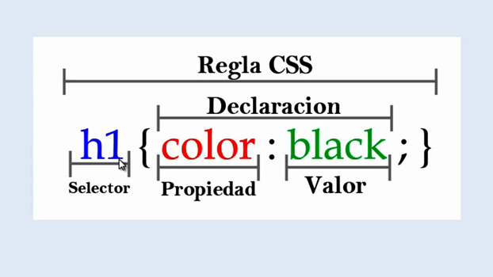

Sintaxis y Selectores CSS
CSS es un lenguaje para el desarrollo de páginas web, (HTML o XML), y sus siglas significan “Cascading Style Sheets” (Hojas de Estilo en Cascadas).
En lo referente a la sintaxis, las reglas CSS constan de 2 bloques, un selector y una declaración.
Los selectores permiten seleccionar elementos HTML de acuerdo con su nombre, identificación, clase o atributo, entre otros.
Por su parte, el bloque de declaración, que está rodeado por llaves, contiene 1 o más declaraciones finalizadas cada una por punto y coma (;), en el que cada declaración incluye un nombre de propiedad CSS y un valor, separado por dos puntos (:).

Bibliografía
AT INTERNET (2022). Glosario: CSS. Recuperado de: https://www.atinternet.com/es/glosario/css/ [Recuperado el: jueves 10 de marzo de 2022.]
W3BAI (2018). CSS Syntax. Recuperado de: http://www.w3bai.com/es/css/css_syntax.html [Recuperado el: jueves 10 de marzo de 2022].